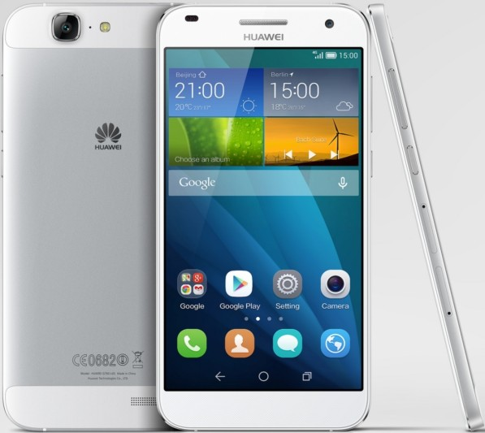

Huawei Ascend G7 (huawei-g7)
|  | |
| Manufacturer | Huawei |
|---|---|
| Name | Ascend G7 |
| Codename | huawei-g7 |
| Released | 2014 |
| Category | testing |
| Original software | Android |
| Original version | 5.1.1 (EMUI 3.1) |
| postmarketOS kernel | Mainline |
| Hardware | |
| Chipset | Qualcomm Snapdragon 410 (MSM8916) |
| CPU | Quad-core 1.2 GHz Cortex-A53 |
| GPU | Adreno 306 |
| Display | 720 x 1280 (IPS LCD, 5.5") |
| Storage | 16 GB |
| Memory | 2 GB |
| Architecture | aarch64 |
{kind=link}
| USB Networking |
Works
|
|---|---|
| Flashing |
Works
|
| Touchscreen |
Works
|
| Display |
Works
|
| WiFi |
Works
|
| FDE |
Works
|
| Mainline |
Works
|
| Battery | |
| 3D Acceleration |
Works
|
| Audio |
Works
|
| Bluetooth |
Works
|
| Camera | |
| GPS | |
| Mobile data | |
| SMS | |
| Calls | |
| USB OTG | |
| NFC |
Works
|
| Accelerometer |
Works
|
|---|---|
| Magnetometer | |
| Ambient Light | |
| Proximity | |
| Hall Effect | |
| Barometer | |
| Power Sensor | |
| Camera Flash | |
|---|---|
| Keyboard | |
| Touchpad | |
| USB-A | |
| HDMI/DP | |
| Ir TX | |
| Ir RX | |
| Stylus | |
| Haptics | |
| Ethernet | |
| FOSS bootloader | |
|
This device is based on the Snapdragon 410. See the SoC page for common tips, guides and troubleshooting steps |
Users owning this device
- Minecrell (Notes: G7-L01)
- Notfound405 (Notes: Ascend G7 TL-00)
Preparation
There are two problems that complicate using the Huawei Ascend G7 with the Qualcomm Snapdragon 410/412 (MSM8916) mainline kernel in postmarketOS:
- Huawei stopped providing bootloader unlock codes. Unless you obtained the code already earlier, there is no official, easy or free way to unlock the bootloader completely.
- Huawei ships outdated firmware for this device, which is not able to boot 64-bit (aarch64) kernels. The situation is similar as for samsung-serranovelte which can only boot mainline in 32-bit mode.
However, there is one big difference for Huawei devices compared to Samsung devices like the samsung-serranovelte: For some reason, most older Qualcomm-based Huawei devices do not seem to have Qualcomm's firmware secure boot enabled. It may look like the bootloader is locked, but actually it is possible to replace the entire bootloader. Also, to boot aarch64 kernels it is possible to flash the firmware from other similar devices.
| WARNING: Overall this is easier said than done. Replacing early boot firmware is a dangerous process that may prevent your device from booting entirely. Make sure that you backup all important data and do not try this if you still need the device for other important purposes. |
| TODO: The instructions below show the general idea, but it's not a step by step guide (yet). Please ask in the mainline channel in Matrix and IRC to get further advice. |
No matter if your device is still bootloader locked or not, it is possible to use EDL to read/write partitions to the eMMC. For example, you can play with https://github.com/bkerler/edl together with the programmer available for the DB410c at https://releases.linaro.org/96boards/dragonboard410c/qualcomm/firmware/linux-board-support-package-r1034.2.1.zip (loaders/prog_emmc_firehose_8916.mbn). You can enter EDL from stock Android using adb reboot edl or using easily available test points after disassembling the device, see e.g. https://i.ibb.co/wMqfMMD/G7-L01-EDL-PIN-OUT.png.
{kind=link}
Note: Even if you use adb reboot edl, be prepared to use the test point method in case your device fails to boot when making a mistake. You may want to test that it works before doing any flashing. |
The display is off in EDL mode, the only life sign is that the device should show up via USB. Hold Power + Volume Down to forcibly reboot the device if you want to get out of EDL mode.
Flashing new firmware
To properly boot the 64-bit mainline kernel you need to replace the following two firmwares:
-
tz(TrustZone): You can take it from the DB410c firmware downloaded earlier (bootloaders-linux/tz.mbn). -
hyp(Hypervisor): You can use qhypstub as open sourcehypfirmware replacement (or you use the proprietarybootloaders-linux/hyp.mbn).
Note: Make a backup of these two partitions using ./edl.py r <hyp/tz> <hyp/tz>.img. |
Unfortunately, the tz.mbn from DB410c is slightly larger than the tz partition on the Huawei G7. This means that you need to re-partition the eMMC before you can flash the firmware from DB410c. A simple way is to re-assign the last 256 KiB of the rpm partition to the tz partition. The rpm firmware is not that large anyway.
| TODO: The re-partitioning process is not described here at the moment because it is particularly dangerous and complicated and really needs to be simplified somehow. Please ask on Matrix and IRC. |
Download tz.mbn from https://releases.linaro.org/96boards/dragonboard410c/linaro/rescue/17.09/dragonboard410c_bootloader_emmc_android-88.zip . It fits in 512KiB, no repartitioning is needed anymore.
Then you could use edl.py to flash the tz.mbn from DB410c and build and flash qhypstub similarly.
lk2nd
| Note: This works only if your bootloader is already unlocked. Otherwise, see #Unlocking bootloader below. |
The mainline kernel depends on an alternative bootloader (lk2nd). It does not replace the stock bootloader, but provides its own Fastboot interface. When using the mainline kernel you should always use lk2nd for flashing, not the stock Fastboot mode.
- Install lk2nd. (Just needed the first time).
-
Warning: lk2nd is installed to the
bootpartition, not theabootpartition!
-
Warning: lk2nd is installed to the
Unlocking bootloader
If your bootloader is locked you need to flash an alternative bootloader which thinks it is unlocked. The lock is purely implemented in the Android bootloader (aboot) so replacing or bypassing it entirely is sufficient. The general idea is to bundle a version of lk1st together with qhypstub, and simply make it jump to a different entry point (lk1st rather than Huawei's bootloader).
Note: It does not seem possible to flash the modified bootloader (aboot) directly at the moment because it has a special HUA WEI! header. Perhaps it contains a signature that is checked by the previous boot stage. While it might be possible to remove this check using reverse-engineering it is safer to bypass it completely with the approach above. |
First, check which display panel is used in your device. You can check it using dmesg | grep panel on the stock Android with adb. You might find a line with the Kernel command line, which contains something like mdss_mdp.panel=1:dsi:0:qcom,mdss_dsi_tianma_nt35521_5p5_720p_video:1:none. Only the tianma panel is supported at the moment but more panels could be added when needed. (Please ask in the chat if you have a different panel in your device.)
- Build lk1st (Check the README.md for requirements.)
$ git clone https://github.com/msm8916-mainline/lk2nd && cd lk2nd $ make TOOLCHAIN_PREFIX=arm-none-eabi- lk1st-msm8916 LK1ST_DTB=msm8916-huawei-g7-l01 LK1ST_PANEL=tianma_nt35521_5p5_720p_video
- Build qhypstub with bundled lk1st
$ git clone -b bundle-aboot https://github.com/msm8916-mainline/qhypstub.git $ cd qhypstub $ git clone https://github.com/msm8916-mainline/qtestsign.git $ make CROSS_COMPILE=aarch64-linux-gnu- BUNDLE_ABOOT=../lk2nd/build-lk1st-msm8916/lk.bin qhypstub-test-signed.mbn
- Flash
qhypstub-test-signed.mbnto thehyppartition with EDL. After a reboot the phone should boot into the lk1st fastboot screen, the Huawei bootloader is skipped entirely.
| WARNING: Be prepared to recovery your phone using the EDL test points in case something goes wrong! |
How to enter flash mode
-
lk2nd Fastboot: Power on the device. After it vibrates, hold
Volume Down. -
lk1st Fastboot: Power on the device and hold
Volume Down.
Installation
See Qualcomm_Snapdragon_410/412_(MSM8916)#Installation.
Modem
The modem does not work yet due to some Huawei-specific firmware problems. See https://github.com/msm8916-mainline/linux/pull/192 for details.